Learning game · Point-and-click inspections and safety walks · HTML / JavaScript / Canvas
Unit 204
A pixel-art point-and-click adventure about a move-out inspection: look, touch, smell, and measure your way through an empty apartment (or an office suite, a warehouse, or a jobsite), then mark every finding on your clipboard.
The hardest calls in a move-out inspection are the ones that decide money and safety. Is that worn carpet normal wear (never charged), tenant damage (charged, but only with a photo), or a maintenance hazard that needs a work order today? I built Unit 204 as a demo piece for a learning design role in property management. It makes you gather evidence before you decide, then grades every call with the reasoning from the standard operating procedure. You walk the unit with Dana from the leasing office, zoom into each feature, and use your senses and a toolbelt of 2008-vintage gear: tape measure, flashlight, screwdriver, hammer, pencil, and a forest-green point-and-shoot camera. Two weeks later, the tenant calls about the deposit, and how you handle that call is graded too.
Four properties. The title screen lets you pick where you're inspecting. Unit 204 is the apartment move-out. Suite 204 is the lease-end walkthrough of an office suite a business just moved out of. Lot 204 is a safety and condition walk of a tenant's warehouse floor, racks, and shop. Site 204 is the owner's safety walk of a contractor's jobsite, outdoors. Each has four areas, its own SOP, gray-area calls, and containers to open, and a Field Safety Handbook explains the OSHA rules behind the safety findings, linked right from your notes. There's more on the other three after the screenshots.
Controls: left-click to use the current verb or tool. A plain click also opens doors and appliances, flips switches, and picks up whatever the tenant left. Right-click cycles Walk, Look, Touch, Smell, and Talk (or press 1–5, or C). Hover over the top edge for the toolbar: senses and tools on the left; your form, Finish, your bag, the SOP binder, mute (M), full screen (F), settings, and the menu (Esc) on the right; and the shift's clock in the middle. Short tips point things out the first time they come up, and Settings turns them off. On a phone the toolbar stays up and the text gets bigger; held upright, the room becomes a strip you swipe side to side.
Tip: right-click inside the game to change your cursor. For full screen, use the game's own button in the toolbar (or press F).
Screenshots

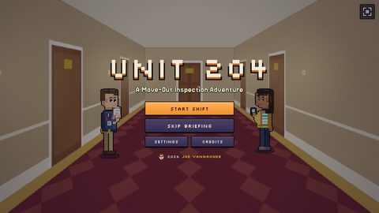

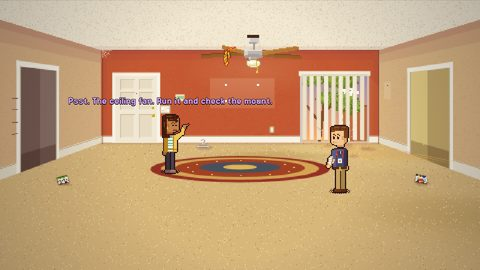

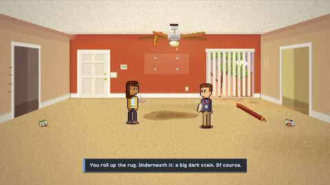

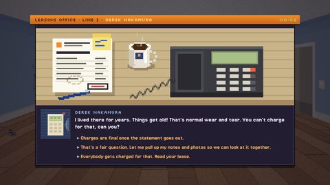

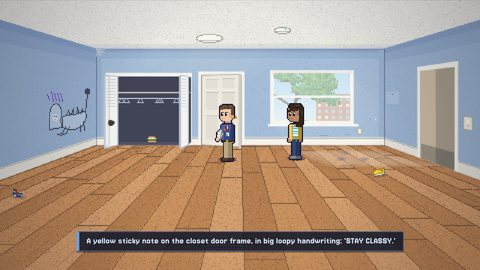

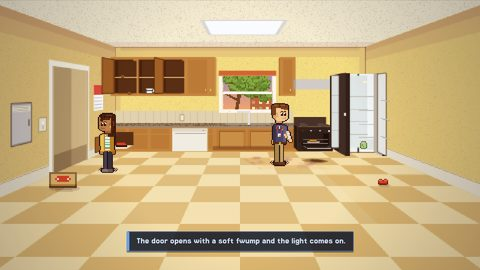

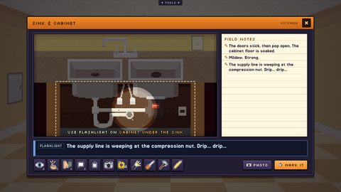

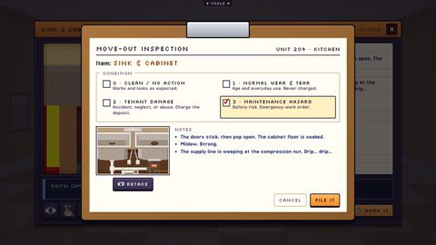

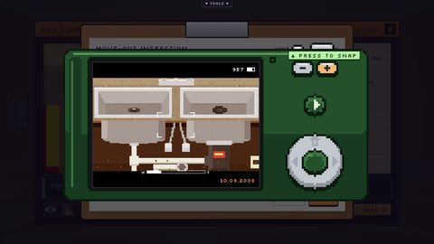

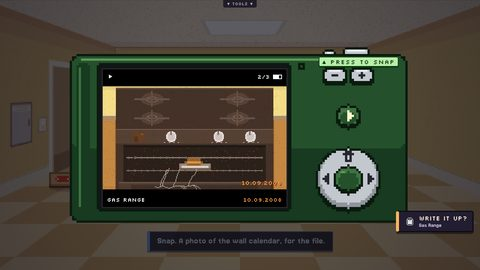

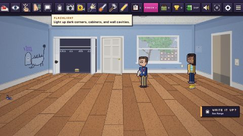

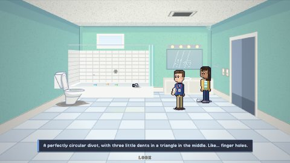

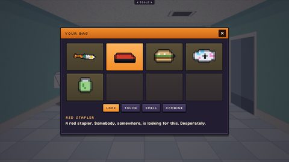

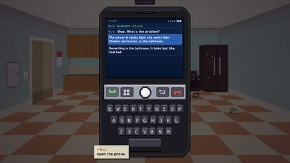

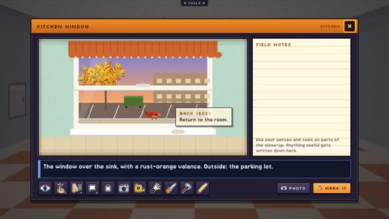

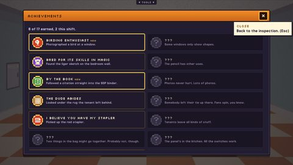

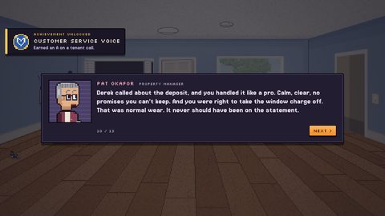

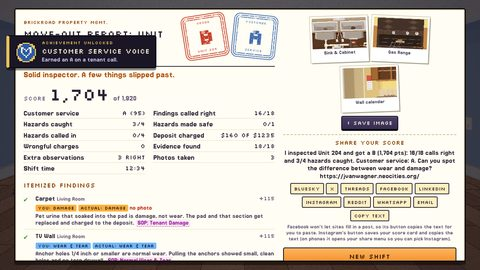

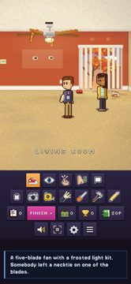
Suite, Lot, and Site 204
Suite 204: the office lease-end walkthrough
Synergex Paper Solutions spent eight years of a ten-year lease in the suite before “right-sizing” out on a Friday in October 2008, and the landlord wants to know what comes out of the security deposit before the space goes back on the market. You walk the lobby and reception, the open office, the break room, and the server and electrical room. The codes are the apartment's, with a commercial twist: anything the tenant added and never restored, like cable holes cut into the walls, card readers, signage, or abandoned cabling, counts as tenant damage. The building's own safety gear is on the list too, from the exit signs' test buttons and the extinguishers to the clear space in front of the electrical panel and the sprinkler heads. There's no tenant call at the end of this one, but Synergex left plenty behind for your bag, from a stack of TPS reports to a World's Best Boss mug.

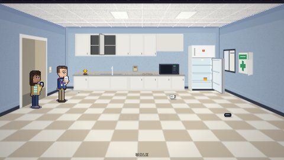

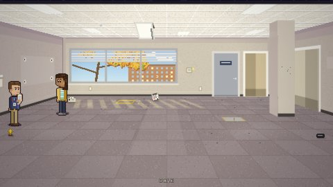
Lot 204 and Site 204: the safety walks
The warehouse and the jobsite trade the deposit for safety. The codes become OK, Note, Correct, and Stop: you aren't OSHA, so you document what's wrong, require the fix under the lease or the contract, and stop the work when it's imminent danger. You suit up first, too. Each area lists the gear it needs; walk in without it and Dana (already in hers) says so, and it counts on your report, because an inspector who skips their own PPE has no business writing anyone else up for it. The crews keep working around you, and any of them will stop to talk. Their tools and belongings are lying around as well. You can pick them up, but your manager hears about anything you don't put back, and it costs you points.
Lot 204 is a tenant's warehouse and light-manufacturing building, walked from the street side in: the loading dock with its PPE station, a racking aisle, the production floor, and the maintenance shop with its chemical storage. The machines really run, and switching on the bench grinder without your safety glasses counts against you. Your nose earns its keep here: commercial acetylene always smells faintly of garlic, so a strong whiff at a cylinder means a leak, and solvent where it shouldn't be is worth a closer look. And whatever you do, don't take the old man's lunch.

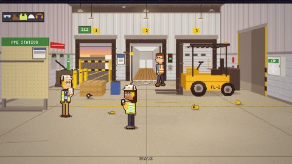

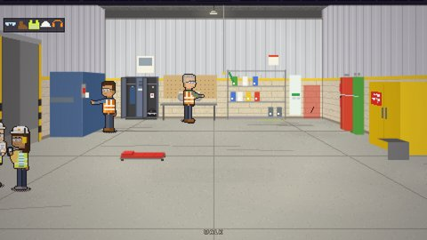

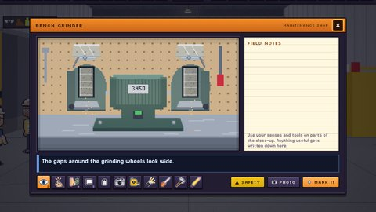
Site 204 is a two-story addition going up for Brickroad, with a general contractor running the site. Under OSHA's multi-employer policy the contractor answers for every trade's safety, and you walk it for the owner: the gate and laydown yard, the second-floor deck and its scaffold, the utility trench, and the trailer yard with the temporary power. The Focus Four, the hazards behind most construction deaths (falls, struck-by, caught-in or between, and electrocution), turn up in every area, and every citation comes from 29 CFR 1926, the construction standards. It's also the only property with weather: clouds drift over, and the wind works at a loose tarp.

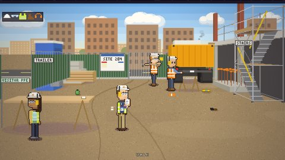

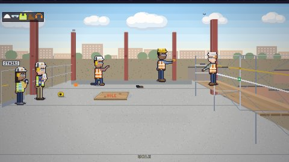

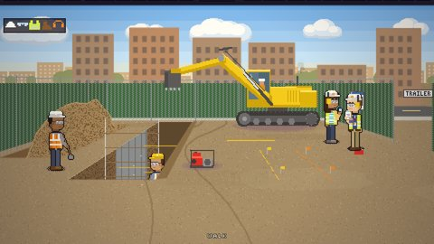

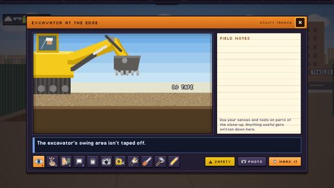
On every property

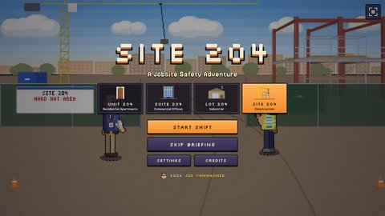

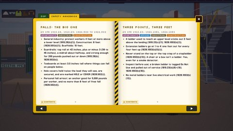

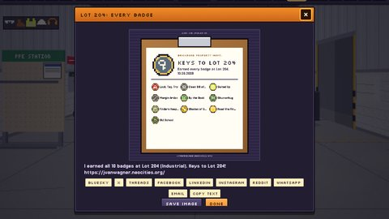
How it plays
- Find it yourself. Every room is full of things to inspect, and each shift some of them have something wrong: a leaky faucet, a child's wall-doodle, grease stains on the carpet, and plenty more. Nobody tells you which ones or how many. Looking at everything and making the call is the game.
- Small oddities. Every room also has 2 to 4 things that look odd but don't really matter: thumbtack holes, a sticky note, hair in the drain, an old dry water stain. You don't have to mark them, but each one you call right is extra credit. It never cancels a miss.
- Look closer. Looking at a feature zooms into a close-up. Touch, smell, and use tools on its parts: measure a hole, tap tile with the hammer, pull an outlet cover with the screwdriver, get a light under the sink. Anything the tenant left inside a cabinet, the oven, or the closet can be picked up right there. Useful findings go into your field notes.
- See if it works. Flip the light switches, the fan's wall switch, and the bathroom vent fan. Every cabinet, appliance door, and the closet swings, drops, or folds open on screen, and closes again; some findings are only visible inside. Raise and lower the blinds (broken blinds can be a finding), and run the fan to watch the slats sway. Run the kitchen faucet and the garbage disposal, work the front door's deadbolt, and look out its peephole.
- Make it safe. A hazard isn't just a box to tick. Kill the circuit at the breaker panel on the kitchen wall, or turn off the gas at the shut-off in the cabinet beside the range, and it counts on your report. Anything on a circuit you've cut stays dead until you flip it back. Then call it in: Dana lends you her BlackBerry, and you walk Gus in maintenance through each hazard on your form (a short branching call built in Scenemaker). The phone also has Snake, and Dana will gently remind you what you borrowed it for.
- Four calls. Use the clipboard to mark each feature Clean, Normal Wear & Tear, Tenant Damage, or Maintenance Hazard, and hear right away whether it was right (or turn that off and find out at the end). Some calls are gray areas, and a defensible answer earns partial credit in yellow. Any note that cites the SOP is a link that opens the binder right to that rule.
- Document it. Damage is only chargeable with a photo, and hazards always need one. Photograph or note anything else you like: it's listed in the report and never counts against you. The camera is a late-2000s pocket camera with a zoom, playback, and erase.
- The tenant calls. Two weeks later, the old tenant phones about the deposit. Sometimes they just want the refund date; sometimes they say the holes were tiny nail holes, that the damage was there on move-in day, or that an old carpet isn't worth a new one's price. If you have the photo and the measurement, you can show them. If you don't, the charge gets dropped and the company pays. The calls are branching scenarios I wrote in my own tool, Scenemaker, and you get a Customer Service grade for listening, explaining plainly, and not making promises you can't keep. Every answer comes in three tones (helpful, noncommittal, or rude), and the tenant, and later your manager, react to whichever you choose.
- Dana. Your assistant from the leasing office stays out of your way, gives room hints and SOP refreshers (never the answer), and walks over and points at what you should check. Her small talk and reactions change with each property.
- A different unit every shift. Your first shift is Unit 204; after that, you're sent elsewhere in the building. Conditions, light (morning, afternoon, golden hour, or rain), paint, floors, and leftover junk change every time (rental DVDs, mail-order envelopes, and VHS tapes of era movies turn up on floors, counters, and sills), along with a few things you might find: a rug that ties the room together, a necktie on the fan, a perfectly round dent in the tub tile.
- The debrief and the report. Your property manager goes over the shift and the call with you first. Then the report: points for the right call, bonuses for real evidence, photos, and extra write-ups (which never cancel a miss), a penalty for missing a hazard, wrongful charges counted, the reasoning for every item, and the extra things you wrote up.
- Little extras. Every window can be inspected, and birds sometimes visit. The pencil doodles in your notes' margins when there's nothing to circle. Thirty-two achievements live in a trophy case on the toolbar, including a completion badge for each property and a Platinum for earning them all, each with a share card. Settings can reset one property's progress, or all of them.
- Music. Nine original songs, all synthesized in ZzFXM: a radio song for each property (a lounge loop in the apartment, elevator bossa nova at the office, a second-shift groove at the warehouse, and a country shuffle on the jobsite), hold music for the tenant's call, and a track for each grade.
- The SOP binder. The standard operating procedure is a binder you page through, with the four condition codes, the field method, and how to handle the tenant's call.
The tenant calls, built in Scenemaker
The customer service and de-escalation scenarios at the end of every shift, all six tenant calls, were written and wired in my own branching-scenario tool, Scenemaker. Each call is a Scenemaker project: a scene for every beat of the conversation, a helpful, a noncommittal, and a rude answer at every turn, each raising or lowering a hidden Customer Service score, and conditions that check what you actually did on the inspection, like whether you took the photo or measured the hole. The finished projects export straight into the game.

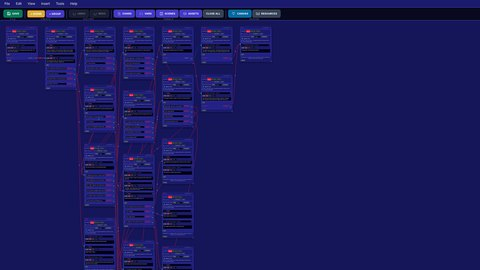

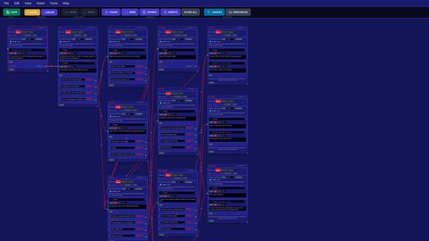
Where it came from

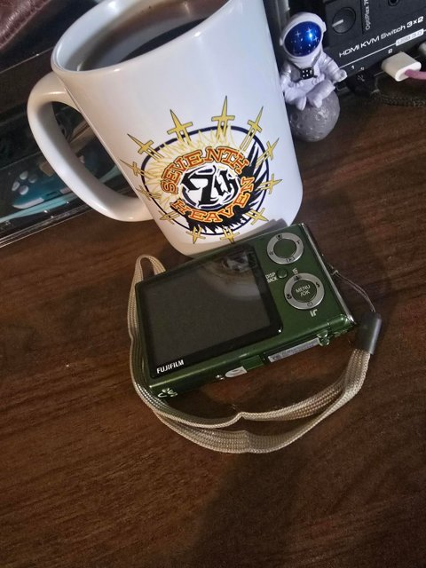
Curiosity and play spark my best ideas, and they're how people of any age learn best. I had just fixed up my trusty old Fujifilm FinePix Z from 2005, and it was still sitting on my desk, buried in notes for a dozen other side projects, when I started wondering how a videogame could sharpen the kind of observation people rely on in the field. That camera was the spark, and a new direction for my JavaScript learning was the fuel.
Hidden-object games are a dime a dozen, but most of them are a checklist on a busy picture. I wanted something more immersive: nobody hands you a list, so you have to notice what's wrong, decide what it means, back it up with evidence, and then explain it to the tenant. That's the same eye for detail and plain talk that inspectors, property managers and anyone in a customer-facing job use every day, practiced somewhere mistakes cost nothing, with a nod to the point-and-click games many of us grew up with.
What it trains
Like my other learning games, it's plain HTML and JavaScript that drops right into a course. Sound effects are by Kenney (CC0), and some of the icons are from Streamline's free Pixel set (CC BY 4.0) and pixelarticons (MIT), and the pixel fonts are Jersey 15 and Silkscreen (SIL Open Font License).